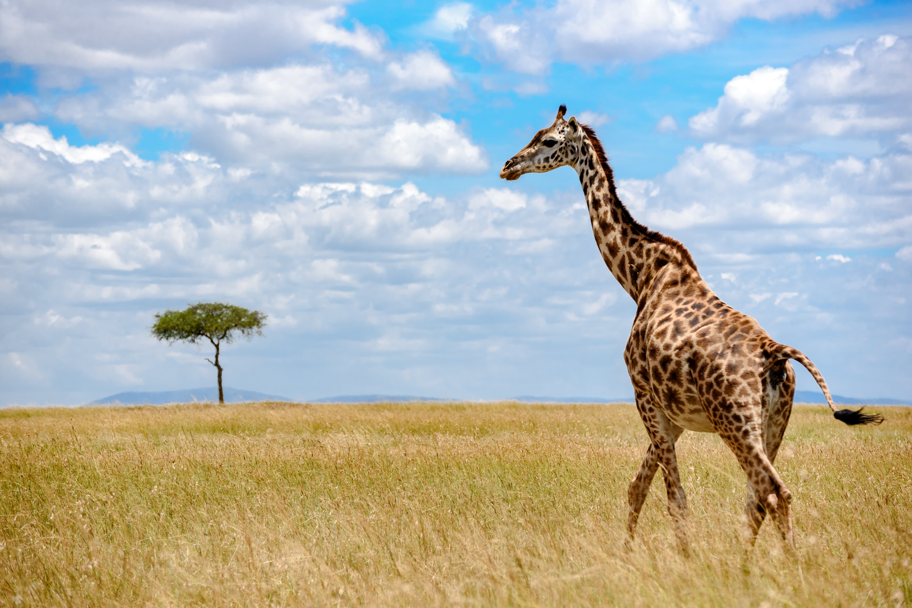
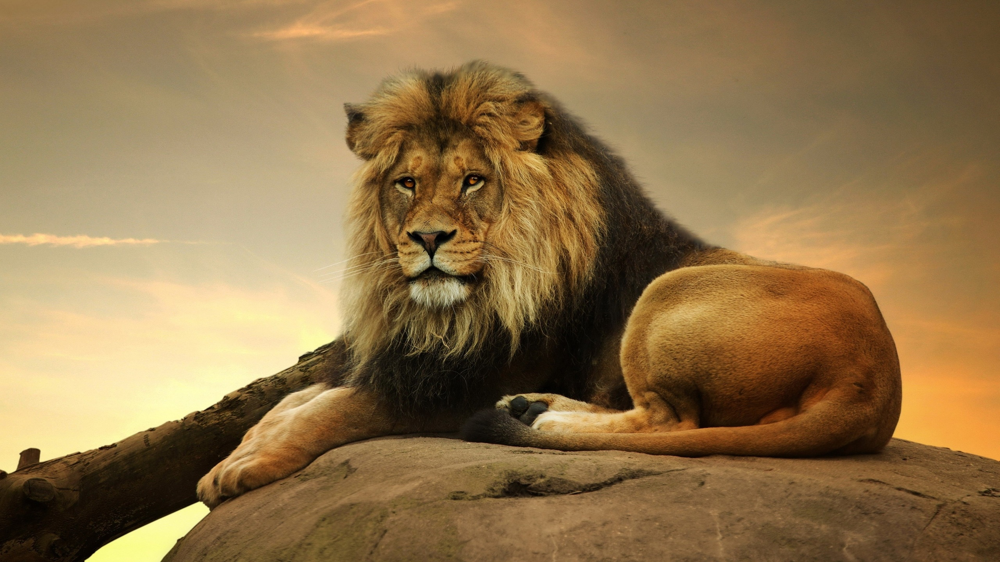
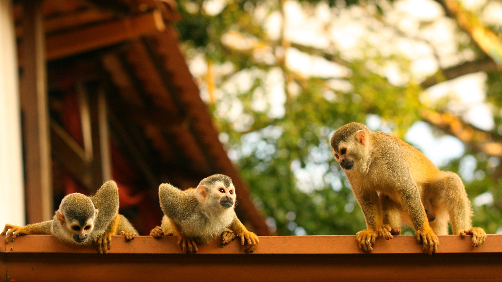
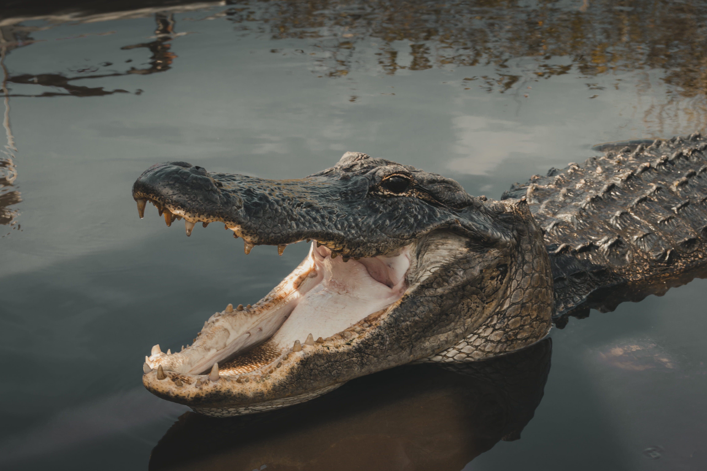

Bears are one of the most intelligent land animals. They have the largest and most complext brain compared to other land mamals. Bears are big, strong, & pretty quick. They can reach speeds up to 40mph. They can also stand tall on their hind legs.
Giraffes are the tallest mammal on earth. They can grow up to 19ft. They can also travel as fast as 35mph.They spend most of their life standing up, even when sleeping. Giraffes also drink water once every few days, most of thier water source comes from the plants they eat.
Lions are highly soical cats. They live in prides of up to 40 members. They are apex predators an at the top of the food chain. The average life span of a lion is 10-18 years in the wild and up to 30 in captivity. The females tend to stay in thier birth pride while the males go off to start their own pride.
There are over 264 different species of monkeys around the world. Monkeys have opposible thumbs. Old monkeys fill thier cheek pouches with food and swallow it later when safe.
Aligators in North America typically live in Flordia and Louisiana. They can grow up to 10-15ft and weigh up to 1000lbs!